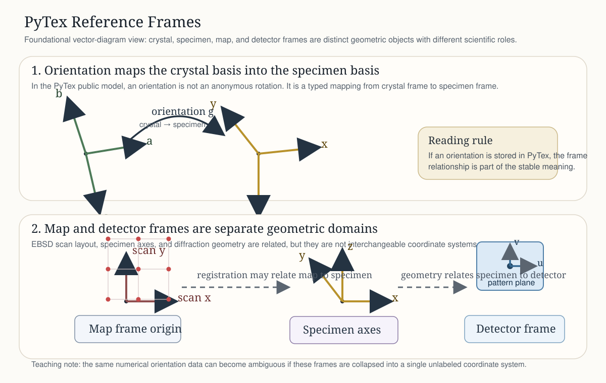

PyTex¶
PyTex is a pure-Python-first crystallographic texture and diffraction library built around an explicit canonical data model for frames, symmetry, orientations, EBSD maps, and diffraction geometry.
PyTex is intentionally opinionated about scientific semantics. Stable APIs are expected to make frame, basis, symmetry, and provenance meaning explicit instead of hiding that meaning in arrays or import-time conventions.
Concepts
Workflows
- EBSD: Kernel-Average Misorientation
- EBSD: Grain Segmentation And GROD
- EBSD: Import Normalization And Manifests
- Core Model: Phases, Unit Cells, And CIF Import
- Scope
- Why This Lives In The Core Model
- Installation
- Minimal Example: From CIF Text
- Example: From A CIF File On Disk
- Example: From An Existing
pymatgenStructure - What PyTex Derives Automatically
- Conventional Versus Primitive Cells
- Disordered Sites And Occupancy
- Interpretation Notes
- Current Limits
- Related Material
- Texture: ODF Evaluation And Pole-Figure Inversion
- Plotting Semantic Primitives
- Diffraction: Geometry And Bragg Rings
- Diffraction: Reciprocal Space And Kinematic Spots
- Texture: IPF Color Keys
Reference
Why PyTex Exists¶
Many texture and diffraction workflows are scientifically fragile at tool boundaries. A rotation matrix, a quaternion, or an EBSD map is not self-describing unless the associated frame, symmetry, and convention choices remain attached to it. PyTex treats those choices as part of the stable product surface.
This leads to three concrete design commitments:
semantic types before convenience arrays
one shared frame and symmetry model across texture, EBSD, and diffraction
documentation and validation artifacts treated as part of feature completion
How PyTex Differs¶
If you are evaluating PyTex against MTEX, orix, LaboTex, or vendor EBSD environments, read How PyTex Differs. That page is the dedicated comparison surface and explains the specific design choices that make PyTex a different kind of project rather than just another feature checklist.
Note
PyTex is designed to serve both research and teaching. The Sphinx pages explain concepts and workflows; the LaTeX notes under docs/tex/ remain the canonical deep scientific source for theory, algorithms, and validation posture.
Current Scope¶
Stable core primitives for frames, symmetry, lattice semantics, provenance, batch semantics, rotations, orientations, and transformation records.
Foundational texture-domain support for pole figures, inverse pole figures, IPF color keys, and discrete kernel ODF evaluation.
Runtime semantic plotting support for vectors, symmetry elements and orbits, rotations, orientations, PF/IPF objects, and discrete ODF views.
Real EBSD workflow support for regular-grid neighbor relationships, KAM, grain segmentation, GROD, boundary extraction, cleanup, and import-manifest normalization contracts.
Core-model phase creation from crystallographic structures and CIF files, with explicit point-group and space-group semantics.
Shared multimodal acquisition primitives for geometry, calibration, quality, scattering, and experiment-manifest emission.
Stable manifest families for import, experiment, benchmark, validation, and workflow-result interchange.
Diffraction-domain containers for geometry and pattern data, with foundational experiment-context integration.
Executable notebook tutorials that mirror the implemented features and their mathematical contracts.
Recommended Reading Path¶
If You Are New To Texture Or EBSD¶
Start with Quickstart.
Read Core Model to understand why frames and symmetry are explicit.
Continue to Orientation And Texture for Euler, quaternion, and symmetry-reduction semantics.
Then move to EBSD: Kernel-Average Misorientation and EBSD: Grain Segmentation And GROD.
If You Are Evaluating Scientific Rigor¶
Read Core Model.
Check Validation.
Follow the linked architecture notes and LaTeX theory or algorithm notes.
Review the MTEX parity ledger in
docs/testing/mtex_parity_matrix.md.
Canonical Assets¶
Architecture overview:
docs/architecture/overview.mdCanonical data model:
docs/architecture/canonical_data_model.mdOrientation and texture foundation:
docs/architecture/orientation_and_texture_foundation.mdEBSD foundation:
docs/architecture/ebsd_foundation.mdDiffraction foundation:
docs/architecture/diffraction_foundation.mdMultimodal characterization foundation:
docs/architecture/multimodal_characterization_foundation.mdValidation program:
docs/testing/strategy.md

Scientific Posture¶
PyTex does not treat external-tool agreement as a vague aspiration. For currently covered areas, MTEX is the validation floor, not the ceiling. Fixture-backed parity tests, unit tests, and theory notes are all part of the definition of a stable feature.
See Validation for the current validation surface and explicit current limits.
Normative And Informative References¶
Normative For PyTex Conventions¶
docs/standards/notation_and_conventions.mddocs/standards/hexagonal_and_trigonal_conventions.mddocs/architecture/canonical_data_model.md
Informative External References¶
Hielscher, Schaeben and collaborators, MTEX documentation.
Nolze et al., Texture measurements on quartz single crystals to validate coordinate systems for neutron time-of-flight texture analysis, Journal of Applied Crystallography.
Bunge, Texture Analysis in Materials Science (1982).